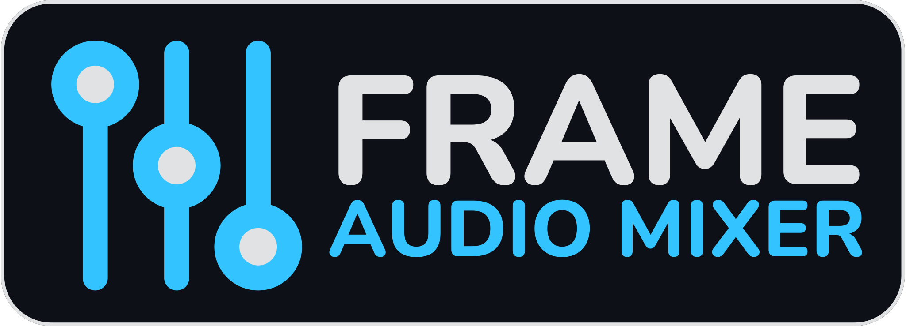
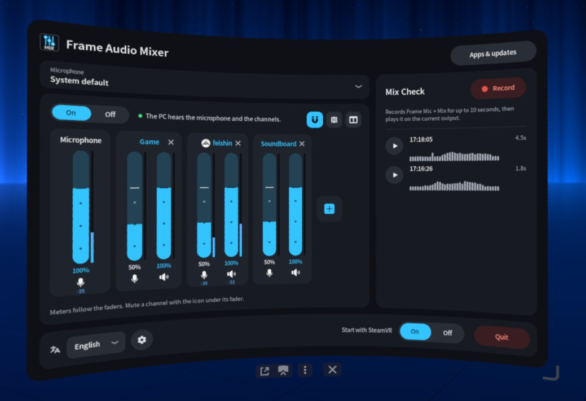
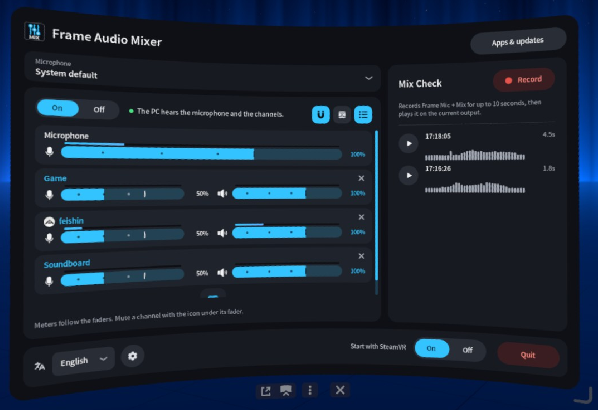
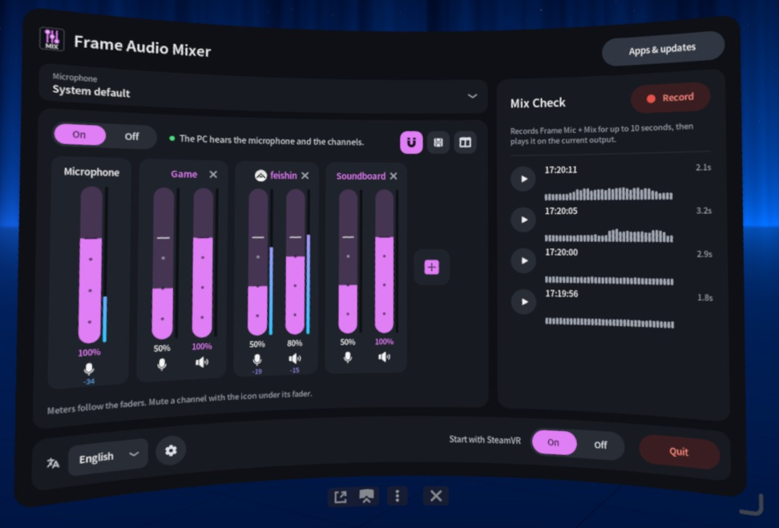
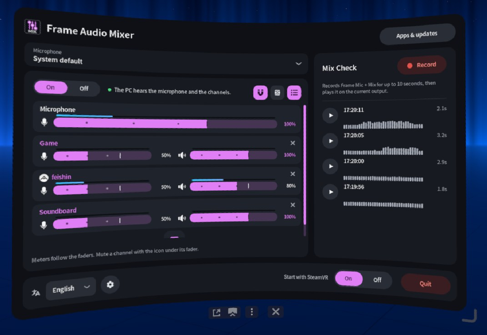

curl -fsSL https://marcus-universe.github.io/frame-audio-mixer/i | sh




Features
There are more apps for the Steam Frame.
Steam Frame apps by @sasaken
More Steam Frame AppsDownload
Install it on the Frame with one command, or take the release files.
Open downloads